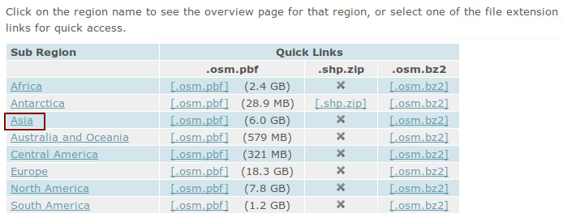
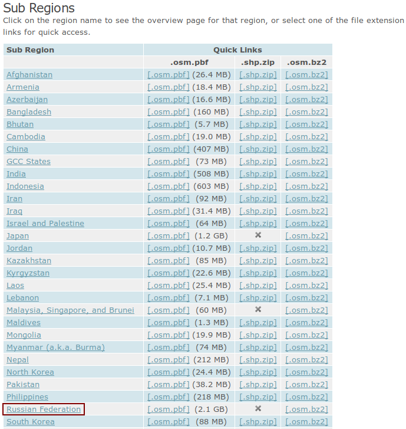
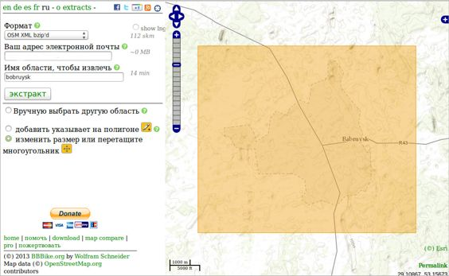

Опытные пользователи OpenStreetMap знают, что этот сервис не позволяет экспортировать данные, размером больше небольшого посёлка. У него есть ограничение на экспортируемую площадь и на количество экспортируемых узлов (не более 50 000 на середину 2018 года). Поэтому для экспорта необходимо использовать другие онлайн-сервисы.
GeoFabrik (бесплатный сервис)
Для получения карт по географическим регионам можно воспользоваться бесплатным сервисом GeoFabrik:
На нем можно либо сразу выкачивать нужный регион, либо кликнуть на название региона и получить список более мелких суб-регионов:


Так можно добраться до самых маленьких регионов размером примерно с округ (две-три области в России).
GIS LAB (бесплатный сервис)
Компания GIS LAB предоставляет бесплатно выгрузки в формате PBF (они называют его osm.pbf), и в формате OSM XML (они называют его osm.bz2, то есть это OSM XML, упакованный с помощью архиватора bz2). Эти выгрузки доступны на странице:
http://gis-lab.info/projects/osm_dump/
Внимание! Файлы с расширением *.bz2 - это не файлы с расширением *.tar.bz2! Это просто файлы, упакованные архиватором bzip2. Для распаковки таких файлов под ОС Linux, нужно воспользоваться командой:
bzip2 -d ИмяФайла.bz2
Bbbike (бесплатный сервис)
Bbbike - это сервис, нацеленный на путешественников, которые перемещаются на велосипедах. На его странице экспорта есть возможность выбрать произвольные регион.

Следует выделить на карте нужную местность, и в полях ввода указать свой адрес e-mail и придумать название выделенной карте. Так как "вытяжка" конкретной карты местности на сервисе происходит из planet.osm, то на это требуется некоторое время. Результат будет готов через 15-30 минут в зависимости от размера площади карты и нагрузки на сервис. Как только процесс экстракции карты завершится, пользователь будет оповещён на оставленный им адрес e-mail.
Немаловажно, что сервис даёт возможность скачать карту не только в формате OSM, но и конвертировать его в уже готовые форматы Garmin, Navit, Esri.
NextGis (платный сервис)
Данный сайт поставляет векторные данные за деньги:
https://data.nextgis.com/ru/
Данный сайт предлагает следующие форматы выгрузки: